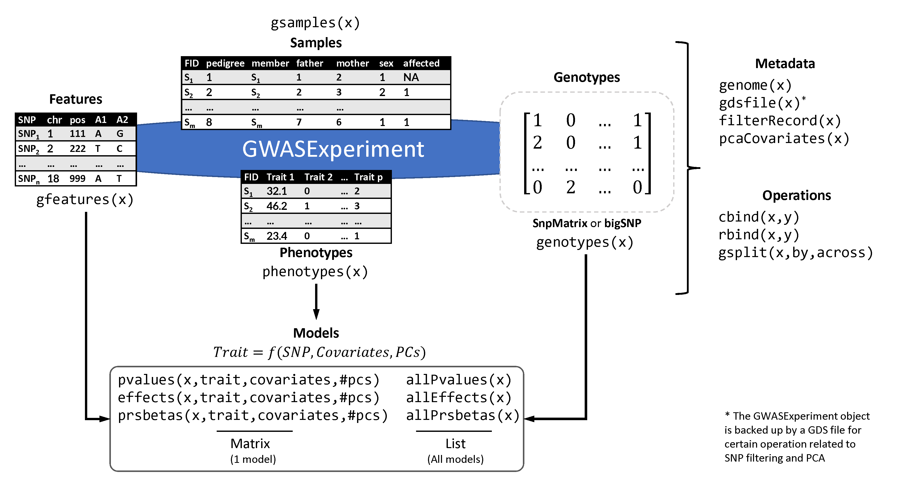

The GWASExperiment class
Panagiotis Moulos
2022-06-06
Source:vignettes/03-gwasexperiment.Rmd
03-gwasexperiment.RmdThe GWASExperiment class
The following subsections outline the main data object used throughout the package for various data interchange and package functions.
Description and structure
The main data structure of PRISMA is the GWASExperiment class which briefly provides facilities for:
- Data import using facilities from the Bioconductor package snpStats.
- Data integrity checks, data selections as well as recording of metadata gathered during analysis steps, such as filtering result tracking and Principal Component Analysis.
- Robust Principal Component Analysis for automatic exclusion of outlier samples (through the R package rrcov.
- Automatic selection of informative PCs to be used as population stratification covariates in subsequent GWAS and PRS analyses using the Tracy-Widom statistic.
- Quality Control and filtering of GWAS data at the genotype level based on:
- SNP call rate.
- Minor Allele Frequency and monomorphic markers (MAF).
- Hardy-Weinberg equilibrium (HWE).
- Linkage Disequilibrium pruning (LD).
- Quality Control and filtering of GWAS data at the sample level (using genotypic data) based on:
- Sample call rate.
- Heterozygosity.
- Identity By Descent (IBD, preceded by LD pruning).
- Outlier filtering based on robust PCA preceded by LD pruning.
- Missing value imputation (not to be confused with imputation of genotypes based on external panels such as 1000 genomes) based on a multi-step process comprising:
- Iterative imputation using facilities from snpStats package (regression of each SNP with nearby ones and extraction of imputation rules).
- For the remaining missing values, imputation using the R package scrime, specialized on missing value imputation for genotypic data.
- Slots which hold marker calculated effects and statistical significance (p-values) from the application of one or multiple GWA tests, for any number of association tests (e.g. using different covariates).
- Facilities for combining the outcome of multiple GWA tests (p-value combination methods).
- Slots which hold the outcome of the PRS extraction outcomes (effects or adjusted betas).
Apart from the GWASExperiment class, PRISMA deploys additional simpler structures with the goals of
- Grouping results in a way useful for reporting.
- Harmonizing the PRS candidate SNP format and accompanying details in a format similar to the scores format of the PGS Catalog.
Finally, the aforementioned missing value imputation process was found to be between 88% and 92% accurate in imputing known genotypes (data not shown in this report).
Object design
The GWASExperiment class is a direct extension of the SummarizedExperiment class, with additional slots to host phenotypes, statistical outcomes, effects used to weight the PRS candidates and certain metadata. Below, the main extensions are summarized (for more information please see the related man page):
- The
rowDataslot/accessor of theSummarizedExperimentis renamed togfeatures(rowDatacan still be used but no formatting checks are performed which may cause crashes) and is aDataFramewith SNP data similar to the contents of the PLINKbimfiles, imported withsnpStats. - The
colDataslot/accessor of theSummarizedExperimentis renamed togsamples(colDatacan still be used as above) and is aDataFramewith SNP data similar to the contents of the PLINKfamfiles, imported withsnpStats. - The
assaysandassayslot/accessor of theSummarizedExperimentis extended togenotypes(assay,assayscan still be used) and checks are performed with respect to the genotype format. - The
metadataslot/accessor of theSummarizedExperimentdoes not have completely free content and must at least contain some information about the data such as genome version and applied filters. - It hosts additional data parallel to
gfeaturesandgsamples:- The
phenotypesslot/accessor hosts phenotypic or other measurements for each sample and is parallel togsamples. - The
pvalues,effects,prsbetasslots/accessors hosts statistical scores from GWA tests (pvalues,effects) or PRS extraction algorithms (prsbetas) for each SNP/feature and is parallel togfeatures. These slots are lists (SimpleList) with as many members as the number of different models tested (e.g. with different covariates, number of PCs). In this way, the wholeGWASExperimentobject is not replicated while maintaining information on many models. -
allPvalues,allEffects,allPrsbetascan be used to retrieve the totality of the respective scores for all models associated with aGWASExperimentobject.
- The
- Other accessors and purpose-related functions are
genometo get/set the genome version of thegfeatures,pcaCovariatesto get/set the PCs calculated over theGWASExperimentobject data,gsplitto split the object feature- or sample-wise according to variables present to features or samples and others mentioned in the respective man page. - Combining functions (
cbind,rbind) are also supported.
The following figure summarizes the GWASExperiment object structure:

Examples
The following sections show some examples of usage of the GWASExperiment objects including their creation and function.
GWASExperiment from simulated data
We create some simulated data with 100 SNPs, 10 samples and 10 causative SNPs for speed and simplicity. We also add pseudo-effects and pseudo-pvalues from two virtual GWA tests to demonstrate the slots of the object. The genome is unknown.
dat1 <- makeSimData(nsnp=100,nsam=10,nphe=3,csnp=10)
## coercing object of mode numeric to SnpMatrix
# Simple GWASExperiment object
gwe1 <- GWASExperiment(
genotypes=dat1$snp,
features=dat1$feature,
samples=dat1$sample,
phenotypes=dat1$pheno
)
# With pseudo-effects and pseudo-pvalues
pspval <- matrix(runif(200),100,2)
rownames(pspval) <- rownames(dat1$snp)
colnames(pspval) <- c("test1","test2")
# Pseudo-effects and directions
pseff <- matrix(runif(200,min=0,max=2),100,2)
dire <- matrix(FALSE,100,2)
dire[sample(nrow(dire),50),1] <- TRUE
dire[sample(nrow(dire),50),2] <- TRUE
pseff[dire[,1],1] <- -pseff[dire[,1],1]
pseff[dire[,2],2] <- -pseff[dire[,2],2]
rownames(pseff) <- rownames(dat1$snp)
colnames(pseff) <- c("test1","test2")
# Assign effects and p-values to the object, assuming a model
# with 'Trait_1' as response and 'Trait_2', 'Trait_3' as
# covariates has been fit (no PCs)
pvalues(gwe1,response="Trait_1",
covariates=c("Trait_2","Trait_3")) <- pspval
effects(gwe1,response="Trait_1",
covariates=c("Trait_2","Trait_3")) <- pseff
gwe1
## class: GWASExperiment
## dim: 100 10
## metadata(3): genome backend filters
## assays class: SnpMatrix with 100 rows (SNPs) and 10 columns (samples)
## assays(1): ''
## rownames(100): snp_1 snp_2 ... snp_99 snp_100
## feature names(5): chromosome snp.name position allele.1 allele.2
## colnames(10): sample_1 sample_2 ... sample_9 sample_10
## sample names(6): pedigree member ... sex affected
## phenotype names(3): Trait_1 Trait_2 Trait_3
## performed tests(2): test1 test2
## associated PRS(0):We create an additional simulated dataset to demonstrate joining and splitting operations.
# Add SNPs (rbind)
dat2 <- makeSimData(nsnp=100,nsam=10,nphe=3,csnp=10)
## coercing object of mode numeric to SnpMatrix
rownames(dat2$snp) <- rownames(dat2$feature) <-
paste("snp",101:200,sep="_")
gwe2 <- GWASExperiment(
genotypes=dat2$snp,
features=dat2$feature,
samples=dat1$sample,
phenotypes=dat1$pheno
)
# p-values and effects will be dropped with warning
gwe12 <- suppressWarnings(rbind(gwe1,gwe2))
gwe12
## class: GWASExperiment
## dim: 200 10
## metadata(5): genome backend genome backend filters
## assays class: SnpMatrix with 200 rows (SNPs) and 10 columns (samples)
## assays(1): ''
## rownames(200): snp_1 snp_2 ... snp_199 snp_200
## feature names(5): chromosome snp.name position allele.1 allele.2
## colnames(10): sample_1 sample_2 ... sample_9 sample_10
## sample names(6): pedigree member ... sex affected
## phenotype names(3): Trait_1 Trait_2 Trait_3
## performed tests(0):
## associated PRS(0):
# Add samples (cbind)
dat3 <- makeSimData(nsnp=100,nsam=10,nphe=3,csnp=10)
## coercing object of mode numeric to SnpMatrix
rownames(dat3$sample) <- rownames(dat3$pheno) <-
colnames(dat3$snp) <- paste("sample",11:20,sep="_")
gwe3 <- GWASExperiment(
genotypes=dat3$snp,
features=dat1$feature,
samples=dat3$sample,
phenotypes=dat3$pheno
)
# p-values and effects will be dropped with warning
gwe13 <- suppressWarnings(cbind(gwe1,gwe3))
gwe13
## class: GWASExperiment
## dim: 100 20
## metadata(5): genome backend genome backend filters
## assays class: SnpMatrix with 100 rows (SNPs) and 20 columns (samples)
## assays(1): ''
## rownames(100): snp_1 snp_2 ... snp_99 snp_100
## feature names(5): chromosome snp.name position allele.1 allele.2
## colnames(20): sample_1 sample_2 ... sample_19 sample_20
## sample names(6): pedigree member ... sex affected
## phenotype names(3): Trait_1 Trait_2 Trait_3
## performed tests(0):
## associated PRS(0):It is important to note that when merging datasets via cbind or rbind the following changes are made with respect to the final object:
- Any statistical GWA/PRS operations and scores are dropped. p-values, effects and PRS betas do no longer have meaning as either the tested SNPs or the number of samples changes.
- In the case of change of sample number (
cbind), principal components are also dropped. We do not drop them inrbindas they still might be of usage but they can be recalculated. - The drop of PCs also applies in subsetting.
-
metadataare merged. If of importance, you should check the outcome and adjust accordingly. - The genome versions of the combining objects must be identical.
GWASExperiment from PLINK files
We use the example files shipping with the snpStats package:
fam <- system.file("extdata/sample.fam",package="snpStats")
bim <- system.file("extdata/sample.bim",package="snpStats")
bed <- system.file("extdata/sample.bed",package="snpStats")
input <- list(fam=fam,bim=bim,bed=bed)Without phenotypes:
gwe <- importGWAS(input,backend="snpStats")
## Reading PLINK files with snpStats framework
## Reading PLINK files with SNPRelate framework and storing output tp /tmp/RtmpNz2YkH/filed6823cbf419
## Start file conversion from PLINK BED to SNP GDS ...
## BED file: '/home/panos/R/x86_64-pc-linux-gnu-library/4.1/snpStats/extdata/sample.bed'
## SNP-major mode (Sample X SNP), 603 bytes
## FAM file: '/home/panos/R/x86_64-pc-linux-gnu-library/4.1/snpStats/extdata/sample.fam'
## BIM file: '/home/panos/R/x86_64-pc-linux-gnu-library/4.1/snpStats/extdata/sample.bim'
## Mon Jun 6 20:29:57 2022 (store sample id, snp id, position, and chromosome)
## start writing: 120 samples, 20 SNPs ...
##
[..................................................] 0%, ETC: ---
[==================================================] 100%, completed, 0s
## Mon Jun 6 20:29:57 2022 Done.
## Optimize the access efficiency ...
## Clean up the fragments of GDS file:
## open the file '/tmp/RtmpNz2YkH/filed6823cbf419' (5.1K)
## # of fragments: 50
## save to '/tmp/RtmpNz2YkH/filed6823cbf419.tmp'
## rename '/tmp/RtmpNz2YkH/filed6823cbf419.tmp' (4.8K, reduced: 312B)
## # of fragments: 24
gwe
## class: GWASExperiment
## dim: 20 120
## metadata(5): genome backend filters gdsfile alleleOrder
## assays class: SnpMatrix with 20 rows (SNPs) and 120 columns (samples)
## assays(1): ''
## rownames(20): IGR1118a_1 IGR1119a_1 ... IGR2016a_1 IGR2020a_1
## feature names(6): chromosome snp.name ... allele.1 allele.2
## colnames(120): 430 412 ... 1991 17702
## sample names(6): pedigree member ... sex affected
## phenotype names(0):
## performed tests(0):
## associated PRS(0):With phenotypes
set.seed(42)
fam <- system.file("extdata/sample.fam",package="snpStats")
bim <- system.file("extdata/sample.bim",package="snpStats")
bed <- system.file("extdata/sample.bed",package="snpStats")
input <- list(fam=fam,bim=bim,bed=bed)
sample <- snpStats::read.plink(input$bed,input$bim,input$fam)
pseudopheno <- data.frame(
case_control=sample(c(0,1),nrow(sample$fam),replace=TRUE),
other_pheno=sample(c("drug","nodrug"),nrow(sample$fam),replace=TRUE),
cont=round(runif(nrow(sample$fam)),3),
row.names=rownames(sample$fam)
)
gwe <- importGWAS(input,phenos=pseudopheno,backend="snpStats")
## Reading PLINK files with snpStats framework
## Reading PLINK files with SNPRelate framework and storing output tp /tmp/RtmpNz2YkH/filed684e7dcc74
## Start file conversion from PLINK BED to SNP GDS ...
## BED file: '/home/panos/R/x86_64-pc-linux-gnu-library/4.1/snpStats/extdata/sample.bed'
## SNP-major mode (Sample X SNP), 603 bytes
## FAM file: '/home/panos/R/x86_64-pc-linux-gnu-library/4.1/snpStats/extdata/sample.fam'
## BIM file: '/home/panos/R/x86_64-pc-linux-gnu-library/4.1/snpStats/extdata/sample.bim'
## Mon Jun 6 20:29:58 2022 (store sample id, snp id, position, and chromosome)
## start writing: 120 samples, 20 SNPs ...
##
[..................................................] 0%, ETC: ---
[==================================================] 100%, completed, 0s
## Mon Jun 6 20:29:58 2022 Done.
## Optimize the access efficiency ...
## Clean up the fragments of GDS file:
## open the file '/tmp/RtmpNz2YkH/filed684e7dcc74' (5.1K)
## # of fragments: 50
## save to '/tmp/RtmpNz2YkH/filed684e7dcc74.tmp'
## rename '/tmp/RtmpNz2YkH/filed684e7dcc74.tmp' (4.8K, reduced: 312B)
## # of fragments: 24
gwe
## class: GWASExperiment
## dim: 20 120
## metadata(5): genome backend filters gdsfile alleleOrder
## assays class: SnpMatrix with 20 rows (SNPs) and 120 columns (samples)
## assays(1): ''
## rownames(20): IGR1118a_1 IGR1119a_1 ... IGR2016a_1 IGR2020a_1
## feature names(6): chromosome snp.name ... allele.1 allele.2
## colnames(120): 430 412 ... 1991 17702
## sample names(6): pedigree member ... sex affected
## phenotype names(3): case_control other_pheno cont
## performed tests(0):
## associated PRS(0):R session info
## R version 4.1.3 (2022-03-10)
## Platform: x86_64-pc-linux-gnu (64-bit)
## Running under: Ubuntu 18.04.6 LTS
##
## Matrix products: default
## BLAS: /usr/lib/x86_64-linux-gnu/blas/libblas.so.3.7.1
## LAPACK: /usr/lib/x86_64-linux-gnu/lapack/liblapack.so.3.7.1
##
## locale:
## [1] LC_CTYPE=en_US.UTF-8 LC_NUMERIC=C
## [3] LC_TIME=en_US.UTF-8 LC_COLLATE=en_US.UTF-8
## [5] LC_MONETARY=en_US.UTF-8 LC_MESSAGES=en_US.UTF-8
## [7] LC_PAPER=en_US.UTF-8 LC_NAME=C
## [9] LC_ADDRESS=C LC_TELEPHONE=C
## [11] LC_MEASUREMENT=en_US.UTF-8 LC_IDENTIFICATION=C
##
## attached base packages:
## [1] stats4 stats graphics grDevices utils datasets methods
## [8] base
##
## other attached packages:
## [1] prisma_0.0.2 SNPRelate_1.28.0
## [3] gdsfmt_1.30.0 snpStats_1.44.0
## [5] Matrix_1.4-1 survival_3.3-1
## [7] SummarizedExperiment_1.24.0 Biobase_2.54.0
## [9] GenomicRanges_1.46.1 GenomeInfoDb_1.30.1
## [11] IRanges_2.28.0 S4Vectors_0.32.4
## [13] BiocGenerics_0.40.0 MatrixGenerics_1.6.0
## [15] matrixStats_0.62.0 lassosum_0.4.5
##
## loaded via a namespace (and not attached):
## [1] utf8_1.2.2
## [2] R.utils_2.11.0
## [3] tidyselect_1.1.2
## [4] gwascat_2.26.0
## [5] RSQLite_2.2.14
## [6] AnnotationDbi_1.56.2
## [7] grid_4.1.3
## [8] BiocParallel_1.28.3
## [9] munsell_0.5.0
## [10] codetools_0.2-18
## [11] ragg_1.2.2
## [12] future_1.25.0
## [13] quincunx_0.1.4
## [14] islasso_1.4.3
## [15] colorspace_2.0-3
## [16] filelock_1.0.2
## [17] OrganismDbi_1.36.0
## [18] highr_0.9
## [19] knitr_1.39
## [20] rstudioapi_0.13
## [21] robustbase_0.95-0
## [22] TTR_0.24.3
## [23] listenv_0.8.0
## [24] optparse_1.7.1
## [25] GenomeInfoDbData_1.2.7
## [26] bit64_4.0.5
## [27] rprojroot_2.0.3
## [28] parallelly_1.31.1
## [29] vctrs_0.4.1
## [30] generics_0.1.2
## [31] xfun_0.31
## [32] BiocFileCache_2.2.1
## [33] R6_2.5.1
## [34] rmdformats_1.0.3
## [35] bitops_1.0-7
## [36] cachem_1.0.6
## [37] DelayedArray_0.20.0
## [38] assertthat_0.2.1
## [39] gwasrapidd_0.99.12
## [40] BiocIO_1.4.0
## [41] Homo.sapiens_1.3.1
## [42] scales_1.2.0
## [43] gtable_0.3.0
## [44] globals_0.15.0
## [45] rlang_1.0.2
## [46] systemfonts_1.0.4
## [47] splines_4.1.3
## [48] rtracklayer_1.54.0
## [49] rsnps_0.5.0.0
## [50] sitadela_1.3.1
## [51] BiocManager_1.30.16
## [52] yaml_2.3.5
## [53] reshape2_1.4.4
## [54] GenomicFeatures_1.46.5
## [55] quantmod_0.4.20
## [56] RBGL_1.70.0
## [57] tools_4.1.3
## [58] lava_1.6.10
## [59] bookdown_0.26
## [60] liftOver_1.18.0
## [61] ggplot2_3.3.5
## [62] ellipsis_0.3.2
## [63] kableExtra_1.3.4
## [64] jquerylib_0.1.4
## [65] Rcpp_1.0.8.3
## [66] rrBLUP_4.6.1
## [67] plyr_1.8.7
## [68] progress_1.2.2
## [69] zlibbioc_1.40.0
## [70] purrr_0.3.4
## [71] RCurl_1.98-1.6
## [72] prettyunits_1.1.1
## [73] cowplot_1.1.1
## [74] zoo_1.8-10
## [75] fs_1.5.2
## [76] crul_1.2.0
## [77] magrittr_2.0.3
## [78] data.table_1.14.2
## [79] openxlsx_4.2.5
## [80] mvtnorm_1.1-3
## [81] survcomp_1.44.1
## [82] hms_1.1.1
## [83] evaluate_0.15
## [84] XML_3.99-0.9
## [85] RMTstat_0.3.1
## [86] shape_1.4.6
## [87] compiler_4.1.3
## [88] biomaRt_2.50.3
## [89] tibble_3.1.7
## [90] KernSmooth_2.23-20
## [91] crayon_1.5.1
## [92] R.oo_1.24.0
## [93] htmltools_0.5.2
## [94] pcaPP_2.0-1
## [95] tzdb_0.3.0
## [96] rrcov_1.7-0
## [97] DBI_1.1.2
## [98] SuppDists_1.1-9.7
## [99] dbplyr_2.1.1
## [100] MASS_7.3-56
## [101] rappdirs_0.3.3
## [102] PhenotypeSimulator_0.3.4
## [103] getopt_1.20.3
## [104] readr_2.1.2
## [105] rmeta_3.0
## [106] cli_3.3.0
## [107] quadprog_1.5-8
## [108] R.methodsS3_1.8.1
## [109] parallel_4.1.3
## [110] pkgconfig_2.0.3
## [111] TxDb.Hsapiens.UCSC.hg19.knownGene_3.2.2
## [112] pkgdown_2.0.3.9000
## [113] GenomicAlignments_1.30.0
## [114] signal_0.7-7
## [115] xml2_1.3.3
## [116] foreach_1.5.2
## [117] svglite_2.1.0
## [118] bslib_0.3.1
## [119] webshot_0.5.3
## [120] XVector_0.34.0
## [121] prodlim_2019.11.13
## [122] rvest_1.0.2
## [123] stringr_1.4.0
## [124] VariantAnnotation_1.40.0
## [125] digest_0.6.29
## [126] graph_1.72.0
## [127] httpcode_0.3.0
## [128] Biostrings_2.62.0
## [129] rmarkdown_2.14
## [130] harmonicmeanp_3.0
## [131] restfulr_0.0.13
## [132] curl_4.3.2
## [133] Rsamtools_2.10.0
## [134] rjson_0.2.21
## [135] tseries_0.10-51
## [136] lifecycle_1.0.1
## [137] jsonlite_1.8.0
## [138] survivalROC_1.0.3
## [139] desc_1.4.1
## [140] viridisLite_0.4.0
## [141] BSgenome_1.62.0
## [142] fansi_1.0.3
## [143] pillar_1.7.0
## [144] lattice_0.20-45
## [145] DEoptimR_1.0-11
## [146] KEGGREST_1.34.0
## [147] fastmap_1.1.0
## [148] httr_1.4.3
## [149] GO.db_3.14.0
## [150] xts_0.12.1
## [151] glue_1.6.2
## [152] zip_2.2.0
## [153] SNPlocs.Hsapiens.dbSNP151.GRCh38_0.99.20
## [154] png_0.1-7
## [155] iterators_1.0.14
## [156] pander_0.6.5
## [157] glmnet_4.1-4
## [158] bit_4.0.4
## [159] stringi_1.7.6
## [160] sass_0.4.1
## [161] bootstrap_2019.6
## [162] blob_1.2.3
## [163] statgenGWAS_1.0.8
## [164] textshaping_0.3.6
## [165] org.Hs.eg.db_3.14.0
## [166] memoise_2.0.1
## [167] FMStable_0.1-2
## [168] dplyr_1.0.8
## [169] future.apply_1.9.0